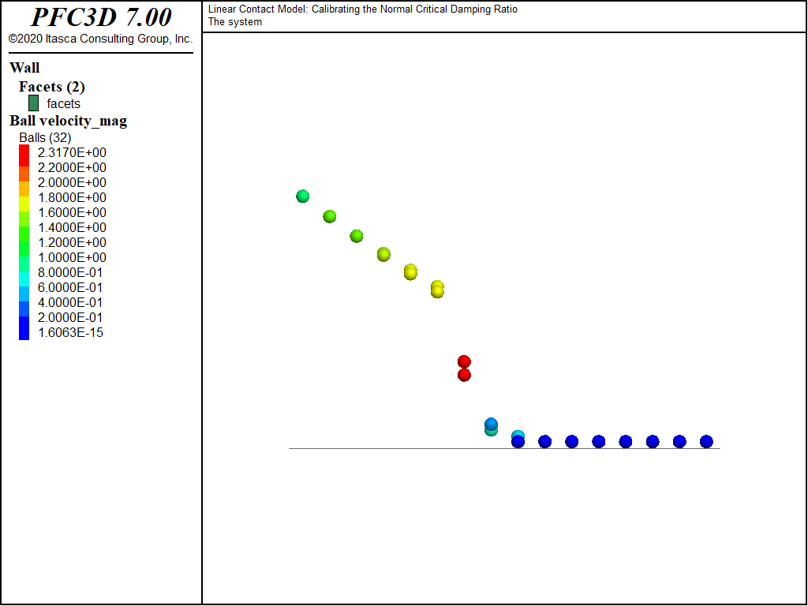
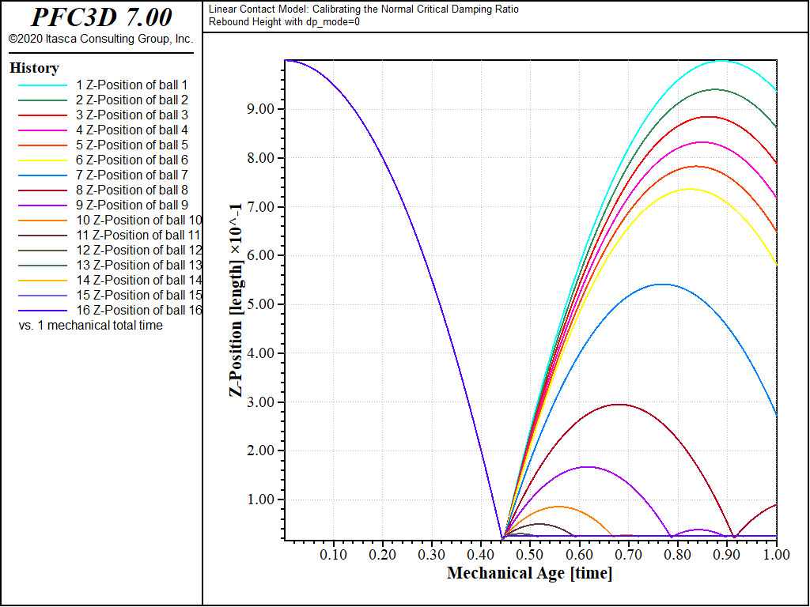
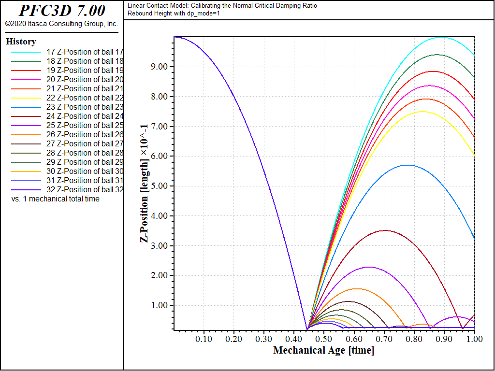
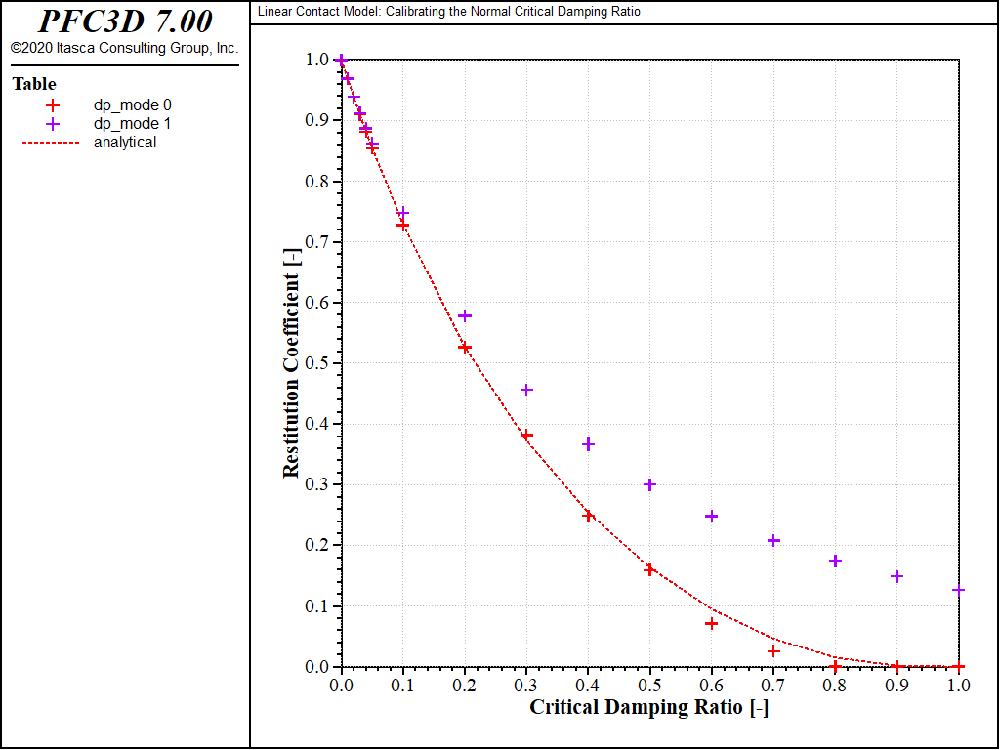
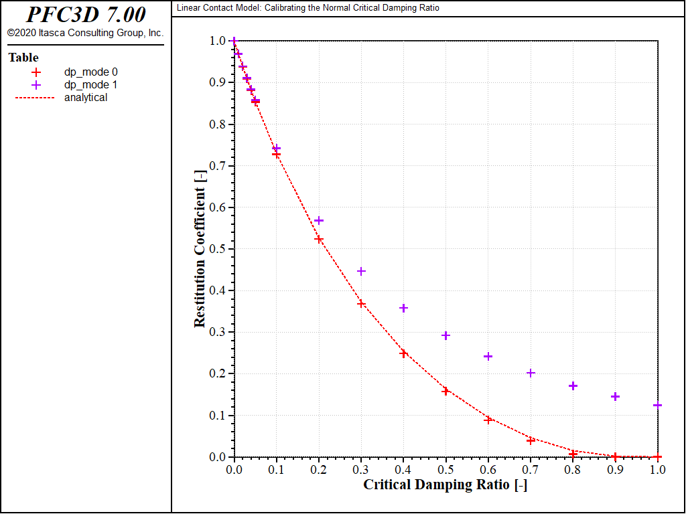

线性接触模型：标定法向临界阻尼比
问题描述
注意
本算例的项目文件可在 PFC 中查看或运行。[1]所用的数据文件（data files）列于本算例末尾。
在采用线性接触模型的 PFC 模型中使用黏性阻尼时，应指定合适的阻尼常数，以便模拟能够再现真实响应。一种做法是利用阻尼常数与恢复系数之间的关系来标定阻尼。[Kawaguchi1992] 通过求解带黏性阻尼的自由振动运动方程推导出了该关系。下面给出该推导过程。此外，还将使用 PFC3D 进行的跌落试验结果与解析解进行了对比。
线性接触模型及其参数在“线性模型（Linear Model）”一节中介绍。
带黏性阻尼的自由振动运动方程由式 (1) 给出：
其中 \(m\) 为质量，\(c\) 为阻尼常数（黏性阻尼系数），\(k\) 为刚度。
其中 \(C_1\) 和 \(C_2\) 为由初始条件确定的任意常数。此外，\(\zeta\) 定义为阻尼常数与临界阻尼常数之比，如式 (3) 所示：
其中 \(c_c\) 为临界阻尼常数（式 (4)）：
其中 \(\omega_n\) 为系统的固有频率。
这种情况对应于欠阻尼系统，两个相互碰撞物体的回弹即表明了这一点。
对于初始条件 \(x=x_0,\dot{x}(t=0)=\dot{x}_0\)，式 (1) 的解由式 (5) 给出：
其中 \(\omega_d\) 为阻尼振动的频率，由下式给出
将 \(x-0\) = 0 代入式 (5)：
经过半个时间周期 \(\pi/\omega_d\)（振动周期）后，系统恢复到 \(x\) = 0 的位置。系统的速度由式 (9) 给出：
因此，恢复系数 \(\alpha\) 由下式给出
此外，阻尼常数与临界阻尼常数之比 \(\zeta\) 以及阻尼常数 \(c\) 分别由式 (11) 和式 (12) 给出：
PFC3D 模型
开展了一项跌落试验，两排各 16 个球颗粒在重力作用下从墙面上方 1 m 的高度处落下。试验采用 线性接触模型（linear contact model），接触法向刚度为 \(k_n\) = 5.0 × 104，阻尼常数与临界阻尼常数之比（\(\beta_n\)）从 0.0 变化到 1.0。此外，阻尼模式设为 \(M_d\) = 0 和 \(M_d\) = 1。当 \(M_d\) = 1 时，物体之间不存在接触拉力，为获得相同的恢复系数，需要高估临界阻尼比。
本次模拟使用数据文件“restitution.dat (3D)”，模拟参数汇总于下表：
| 下落高度 | 1 m |
| 球颗粒直径 | 50 mm |
| 球颗粒密度 | 2650 kg/m3 |
| 接触法向刚度（\(k_n\)） | 5 × 104 N/m |
| 接触剪切刚度（\(k_s\)） | 0 |
| 摩擦系数（\(\mu\)） | 0 |
| 法向临界阻尼比（\(\beta_n\)） | 0.0 至 1.0 |
| 阻尼模式（\(M_d\)） | 0 和 1 |
求解 1 s 力学时间后系统的状态如 图 1（Fig. 1） 所示。球颗粒按其速度大小着色。随着 \(x\) 增大，临界阻尼比从 0.0 变化到 1.0，因此 \(x\) 接近 0.0 的球颗粒回弹高度最大，此时碰撞为弹性碰撞。位于 \(y\) = 0.0 的那一排球颗粒，其接触设置为 \(M_d\) = 0，而第二排则采用 \(M_d\) = 1。


图 1：模拟 1 s 后系统的状态。
图 2（Figures 2） 与 图 3 分别绘出模拟过程中监测到的球颗粒 z 坐标位置，二者分别对应 \(M_d\) = 0 与 \(M_d\) = 1 的情况，并说明回弹高度与频率如何随 \(\beta_n\) 与 \(M_d\) 变化。


图 2：球颗粒 z 坐标位置历史，\(M_d\) = 0。


图 3：球颗粒 z 坐标位置历史，\(M_d\) = 1。
恢复系数由球颗粒的最大回弹高度计算得到；对于 \(M_d\) = 0（红色标记）与 \(M_d\) = 1（绿色标记与虚线）两种情况，其结果以临界阻尼比为横轴绘制于 图 4（Fig. 4） 中，图中还同时给出了由公式 (10) 表示的解析解（黑色虚线）。数值解与解析解之间的最大差异小于 3%。请注意，数值模型的精度取决于时间积分的粒度：这一方面是因为接触模型的实现依赖于该粒度，另一方面也是因为本算例中用于评估恢复系数的方法（测量回弹高度）依赖于该粒度。以上给出的结果是在采用 PFC 自动计算的时步的情况下得到的。将时步固定为更小的值（1 × 10-5）后重复进行模拟：所得结果（见 图 5（Fig. 5））与解析解的吻合程度更高（最大差异小于 1%）。


图 4：恢复系数与临界阻尼比之间的关系。


图 5：恢复系数与临界阻尼比之间的关系。模拟时步固定为 1 × 10-5。
参考文献
| [Kawaguchi1992] | Kawaguchi, T. “Numerical Simulation of Fluidized Bed Using the Discrete Element Method (the Case of Spouting Bed),” 载于 JSME (B)，第 58 卷，第 551 期，第 79-85 页（1992）。 |
数据文件
restitution.dat (3D)
; 文件名：restitution.p3dat
;
; 重力落球试验：测试线性接触模型在法向
; 取不同法向临界阻尼比与不同阻尼模式
; 时的响应。
; 注意本算例使用接触模型分配表，按空间
; 范围为本模型中的每个接触指定不同的
; 接触模型参数。
;
;=========================================================================
model new
model large-strain on
[global t1 = 'Linear Contact Model: ']
[global t2 = 'Calibrating the Normal Critical Damping Ratio']
model title [t1 + t2]
;-------------------------------------------------------------------------
; --------------------- 自定义工具函数 -------------------------
;-------------------------------------------------------------------------
fish define make_system(rad,height)
local dia = 2.0*rad
local _lx = 2*dia*16
local _ly = 2*dia*2
local _lz_inf = -0.5*dia
local _lz_sup = height + 2.0*dia
local _rad = 0.5*dia
command
model domain extent (0,[_lx]) (0,[_ly]) ([_lz_inf],[_lz_sup]) ...
condition reflect reflect reflect
wall generate id 1 polygon 0 0 0 ...
[_lx] 0 0 ...
0 [_ly] 0 ...
[_lx] [_ly] 0
model history name '100' mechanical time-total
history interval 1
end_command
local _count = 0
local _zpos = height
local test = 1.0
loop local j(1,2)
local _ypos = dia *(2*j-1)
local _ymin = _ypos - 0.5*dia
local _ymax = _ypos + 0.5*dia
loop local i(1,16)
local _xpos = dia *(2*i-1)
local _xmin = _xpos - 0.5*dia
local _xmax = _xpos + 0.5*dia
_count = _count+1
command
ball create id [_count] rad [rad] pos [(_xpos,_ypos,_zpos)]
ball history name [string(_count)] position-z id [_count]
end_command
end_loop
end_loop
end
fish define fill_cmat(rad,kn)
local _cn
local _dpmode = 0
loop local j(1,2)
if j > 1 then
_dpmode = 1
endif
local _ypos = 2.0*rad *(2*j-1)
local _ymin = _ypos - rad
local _ymax = _ypos + rad
loop local i(1,16)
local _xpos = 2.0*rad *(2*i-1)
local _xmin = _xpos - rad
local _xmax = _xpos + rad
if i <= 6 then
_cn = 0.0 + (i-1.0)*0.01
else
_cn = 0.0 + (i-6)*0.1
endif
command
contact cmat add model linear ...
property kn [kn] dp_nratio [_cn] dp_mode [_dpmode] ...
range position-x [_xmin] [_xmax] ...
position-y [_ymin] [_ymax]
end_command
end_loop
endloop
end
fish define make_tables(rad,height)
global get_hist_max
local tab_ana = table.create('analytical')
local tab_dp0 = table.create('dp_mode 0')
local tab_dp1 = table.create('dp_mode 1')
tab_dp = tab_dp0
loop local j(1,2)
local histfirst = 1 + 16*(j-1)
loop local i(1,16)
local _cn
if i <= 6 then
_cn = 0.0 + (i-1)*0.01
else
_cn = 0.0 + (i-6)*0.1
endif
if j = 1 then
local rth
if _cn # 1.0 then
rth = -1.0 *_cn * math.pi / math.sqrt(1.0-_cn*_cn)
rth = math.exp(rth)
else
rth = 0
endif
table.value(tab_ana,i) = vector(_cn,rth)
endif
local hid = histfirst + (i-1)
local reb_h = get_hist_max(hid) - rad
reb_h = math.max(reb_h,0.0)
local repu = math.sqrt(reb_h /(height-rad))
table.value(tab_dp,i) = vector(_cn,repu)
endloop
tab_dp = tab_dp1
endloop
global err = 0
loop i (1,16)
err = math.max(err,math.abs(table.y(tab_dp0,i)-table.y(tab_ana,i)))
endloop
end
fish define get_hist_max(hid)
; 求某条历史的第一个最大值
tab_tmp = table.create('dummy')
command
history export [string(hid)] table 'dummy'
endcommand
; 先经过第一个最小值，再求第一个最大值（回弹高度）
local tsize = table.size(tab_tmp)
local minpassed = 0
local max_h = -1e20
section
loop local it(2,tsize)
local _y1 = table.y(tab_tmp,it-1)
local _y2 = table.y(tab_tmp,it)
if minpassed = 0 then
if _y2 > _y1 then
minpassed = 1
endif
else
max_h = math.max(max_h,_y2)
if _y2 < max_h then
exit section
endif
endif
endloop
end_section
table.delete(tab_tmp)
get_hist_max = max_h
end
;-------------------------------------------------------------------------
; ---------------------------- 模拟 --------------------------------
;-------------------------------------------------------------------------
[global ball_radius=0.025]
[global drop_height=1.0]
[make_system(ball_radius,drop_height)]
[fill_cmat(ball_radius,5.0e4)]
ball attribute dens 2650
model gravity 0 0 -10.0
model save 'ini'
model solve age 1.0
;
[make_tables(ball_radius,drop_height)]
model save 'final'
model restore 'ini'
model mechanical timestep fix 1e-5
model solve age 1.0
;
[make_tables(ball_radius,drop_height)]
model save 'final-dtfix'
program return
;=========================================================================
; 文件结束：restitution.p3dat
尾注
| [1] | 要在 PFC 中查看本项目，请使用程序菜单。
⮡ PFC |
| 这些内容对您有帮助吗？… | FLAC3D © 2019, Itasca | 原文更新于 2020 年 10 月 8 日 |
| 版权与免责声明 | ||